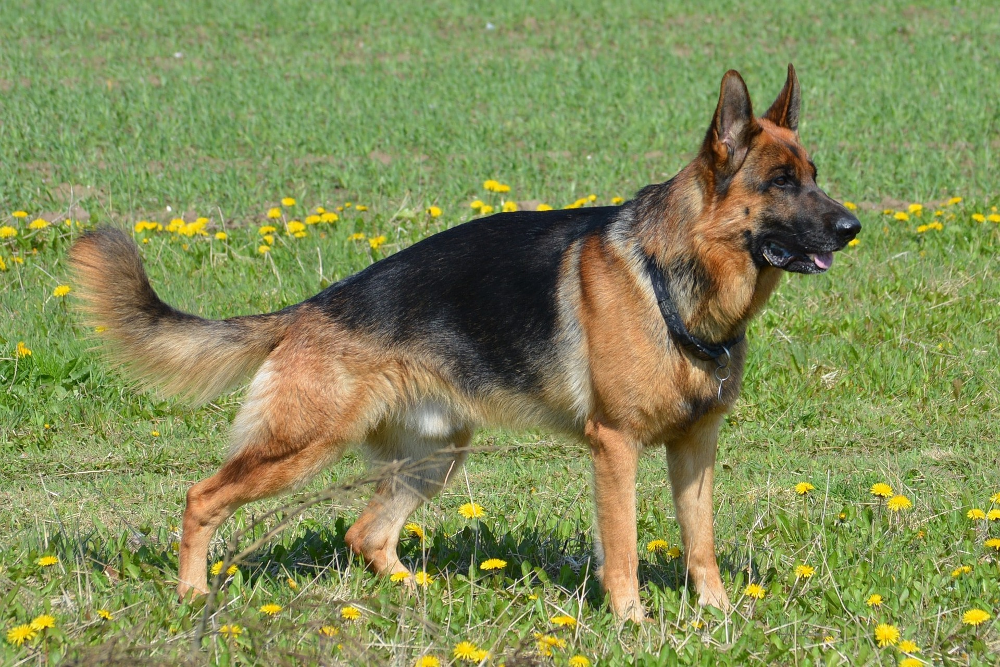
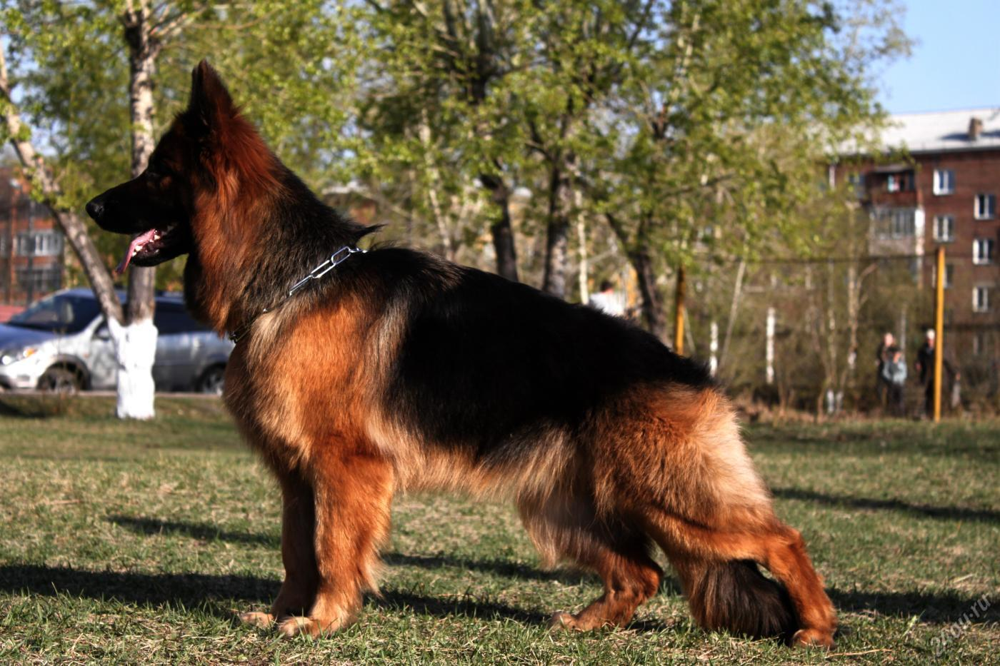
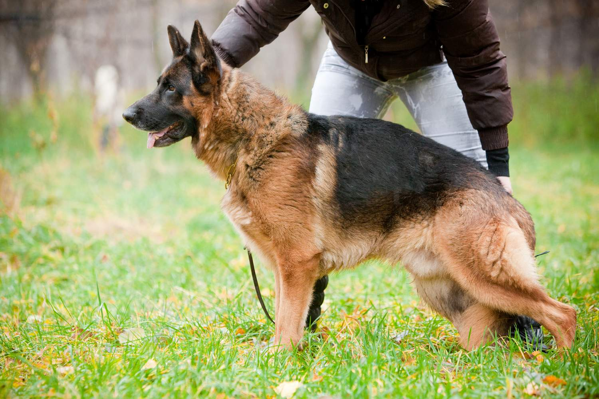

Немецкая овчарка — порода собак, изначально использовалась в качестве пастушьей и служебно-розыскной собаки.
Немецкая овчарка была получена в результате селекции и скрещивания некоторых разновидностей гуртовых собак Центральной и Южной Германии. Различают гладкошёрстную и длинношёрстную разновидности.
В наше время немецкие овчарки занимаются выставочной карьерой, охраной, а также являются собаками для семьи.
История породы и её происхождениe
Определяется два основных центра происхождения, а именно на нынешней территории Скандинавии и Северо-Западной России, но и здесь не обошлось без примеси крови индийского волка. Первый представитель немецкой овчарки как породы — грязно-белого окраса Грайф — был показан на выставке в Ганновере в 1882 году. Грайф был первым внесен в родословную книгу немецких овчарок. Немецкая овчарка была выведена в конце XIX века. Своим официальным рождением порода обязана усилиям основателей Клуба любителей немецкой овчарки, во главе которого стоял ротмистр Макс фон Штефаниц, по праву считающийся духовным отцом этой породы собак. Широта взглядов фон Штефаница позволила ему без всякой предвзятости оценивать различные типы немецких овчарок в надежде создать некий усреднённый тип. В основу будущей породы лёг один-единственный принцип: «Немецкой овчаркой считается любая пастушья собака, обитающая в Германии, которая, благодаря постоянным тренировкам её качеств пастушьей собаки, достигает телесного и психического совершенства в рамках своей утилитарной функции». Выведение породы, организованное и поставленное с национальным размахом, быстро прогрессировало благодаря объединённым усилиям немецких заводчиков пастушьих собак. В 1899 году немецкая овчарка впервые была официально показана на выставке собак.
Стандарт породы
Стандарт породы немецкая овчарка был впервые составлен Штефаницем и Майером в 1899 году. Первоначальный текст был дополнен на 6-й ассамблее членов SV, происходившей 28 июля 1901 года, на 23-й ассамблее, состоявшейся 17 сентября 1909 года в Кёльне, на собрании Совета директоров и Консультативного комитета в Висбадене 5 сентября 1930 года и на заседании Комиссии по разведению и Совета директоров 25 марта 1961 года. Затем текст был пересмотрен Всемирным союзом обществ любителей немецкой овчарки и принят на заседании WUSV 30 августа 1976 года. Еще раз стандарт был переписан и реструктурирован 23—24 марта 1991 года.
Развитие породы в XX веке
Первоначальное предназначение немецкой овчарки — охрана стада. Сокращение количества домашнего скота и широкое распространение породы заставили заводчиков искать новые способы использования собаки, благо её физические и психические качества, физическая стойкость, выносливость в непогоду, прекрасно развитое чутьё обещали многое. Блестящие успехи немецкой овчарки в самых различных видах деятельности не замедлили обратить на себя внимание. В 1901 году полицией совместно с Германским клубом любителей немецкой овчарки были организованы специальные испытания, а два года спустя составлены и опубликованы правила дрессировки и использования полицейских собак. В 1914 году клуб SV организовал демонстрацию возможностей немецкой овчарки в армии. В 1925 году во Франкфурте-на-Майне состоялся первый выставочный чемпионат. Первая мировая война выдвинула немецкую овчарку в буквальном и переносном смысле на передовые позиции. Незаменимая помощница военных, она стала превалировать в питомниках как немецкой армии и в войсках её союзников, так и в армиях Антанты. Вторая мировая война нанесла собаководству, как и всем другим областям жизни, огромный ущерб, однако некоторым заводчикам всё-таки удалось сохранить небольшое количество племенных собак. В 1946 году Германия оказалась поделённой на две части. Естественно, что с этой поры в ГДР стали возникать свои линии собак. Основной тенденцией последних двух десятилетий является расширение круга племенных собак, в основном благодаря сотрудничеству с опытными собаководами всех пяти континентов, строго соблюдающих рекомендации немецких специалистов. В результате возникла конкуренция не только на чемпионате SV, но и на европейских и всемирных чемпионатах служебных собак, из года в год подтверждающая, что во всем мире появилось большое количество заводчиков и просто любителей немецких овчарок, способных конкурировать с их коллегами из Германии.
Общая характеристика
Это служебная собака с уравновешенным, подвижным типом поведения, способная к разнообразной дрессировке. Немецкая овчарка наиболее успешна, если имеет одного хозяина, но при этом её сильной стороной (как служебной собаки) является то, что она очень легко меняет хозяев и заинтересованно работает с новыми. Например, ротвейлер или ризеншнауцер плохо воспринимают смену хозяев, отказываются слушаться новых, тоскуют по старым, но к овчаркам это не относится. При патрульной службе собакам приходится часто, порой каждодневно, менять спутников, и тут немецкая овчарка — вне конкуренции. Она выполняет команды любого полицейского, с которым идет в патруль. Немецкая овчарка идеально подойдет на роль домашнего любимца, с дрессировкой этой овчарки справится даже начинающий собаковод.
